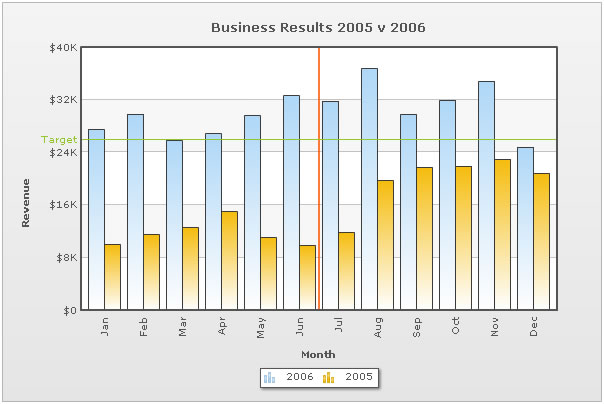

| Multi-Series Chart XML |
Multi-series charts are charts where you compare multiple series of data. In our previous example, we had seen how to plot a chart indicating the Monthly Sales Summary for one year. This data belonged to one particular series, which is for the year say, 2005. Now, if you need to compare the data for two or more years, you will have to use multi-series charts. Using multi-series charts, you can compare data for two sor more number of series. A simple 2D multi-series chart looks as under: |
|  |
As you can see above, here we are comparing data for the year 2006 and 2005. The XML for this chart looks as under: |
<chart caption='Business Results 2005 v 2006' xAxisName='Month' yAxisName='Revenue' showValues='0' numberPrefix='$'> |
| Brief Explanation |
| If you have already gone through the single series XML structure, you will find notable differences between the two XML structures. There are the new <category> and <dataset> elements and the <set> elements now just contain the value attribute. However, if you are still unaware of the FusionCharts XML structure, let's get to the basics first. The <chart> element is the main element of any FusionCharts XML document - it represents the starting point and the ending point of data. The <chart> element has a number of attributes that help configure the cosmetic and functional properties of the chart. You can find full list of such attributes in "Chart XML Sheet" of each chart. In the most general form, attributes have the following form: The attributes can occur in any order and quotes can be single or double like xAxisName='Month'. However, you need to make sure that a particular attribute occurs only once for a given element. Duplicate attributes result in XML validation error. Next to the <chart> element is <categories> element and its child <category> elements. Each <category> element represents a label on the x-axis. The <category> elements need to be defined for all the multi-series charts before you can define the data. For example, in our chart, the categories are the month names (Jan, Feb, Mar .... ) as we are plotting a chart to show monthly sales summary for two consecutive years. Between the <category> elements, we can have the <vLine> element, which indicate vertical separator lines running along the height and width of the chart canvas. <vLine color='FF5904' thickness='2'/> Now, in a multi-series chart, each series of data (that is, each set of data) needs to be enclosed between a <dataset> element. In our example, we are plotting a chart showing monthly sales trend for two different years. The first dataset contains data for the year 2006 and the second one for 2005. Depending on the chart type, there are a number of properties which you can define for each <dataset> element, which you can see in "Chart XML Sheet" of that chart. Moving on, each <set> element (which is a child element of the <dataset> element) represents a set of data which is to be plotted on the chart. A typical <set> element will look like: <set value="27400"/> |
| You should note that the number of <category> elements should be equal to the number of data rows in each data sets, that is, if you mention twelve categories (twelve months), the data for both years (2005 and 2006) should also contain twelve <set> elements (twelve rows of data). Else, the chart will display empty space at that position. |
Next we have the <trendLines> element. Using this function of the chart, you could draw custom lines on the chart to represent a trend. For example, in our above XML, we have defined a line at 26000 to represent the Target sales for the period. Finally, you have the <styles> element which is new in FusionCharts XT. It helps you apply font, effects and animations to various objects of the chart. Styles lends a simple mechanism using which you can easily control the visual layout of charts. To read more on Styles, please see FusionCharts XT Styles section. |